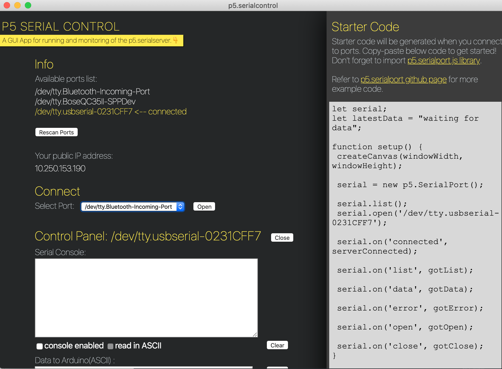
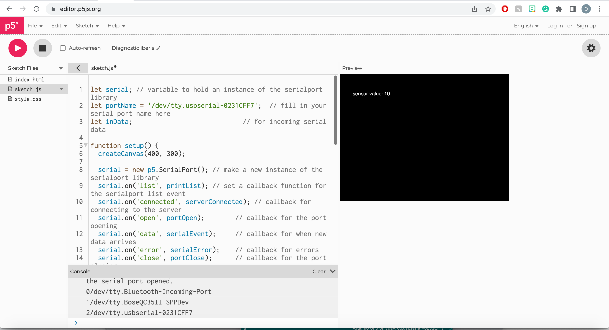

<div class="container-fluid">
<h1> Week 11: Computer Programming </h1>
<img src="motor_circuit.gif"
alt="Arduino Example Setup"
width="720" height="480">
<h2> Displaying Data From Arduino Using p5.js </h2>
Last updated: April 30, 2022
I wanted to expand on last week's project for this week. Last week, Chris helped me control the stop and start of a stepper motor using an LED. For this week, I wanted to display something regarding the status of the motor/LED sensor on my computer. There are a few neat options for this and I decided to choose p5.js for this week. I followed [this tutorial](https://itp.nyu.edu/physcomp/labs/labs-serial-communication/lab-serial-input-to-the-p5-js-ide/) very closely to set up my p5.js page. <br>
<h4> Part 1: Reading a sensor value in p5.js </h4>
<h5> Part 1A: Arduino Code for this Project </h5>
I was able to use the same Arduino code as last week, with just a few modifications, namely with the addition of something to display the reading of the LED sensor using a <code>Serial.begin(9600);</code> and <code>serial.println</code> function. One really neat thing about the using the Serial monitor for this week (and eventually displaying sensor information on p5) was that I started by using the <code>serial.Write</code> function, but eventually moved to <code>serial.print</code> and finally <code>serial.println</code>. I learned that "print" will display values from a sensor reading and ln goes to a new line each time! At first, I was having crazy long strings of numbers, like 5723894723785475982743236492, which wouldn't be very helpful, because I couldn't get a sensor reading in a new line! <br>
Here's the Arduino code for this week (AccelStepper.h surrounded by <>'s in the actual code): <br>
<pre><code>
# include AccelStepper.h
const int stepPin = 13; // blue
const int dirPin = 12; // orange
// Define a stepper and the pins it will use
AccelStepper stepper(1, stepPin, dirPin); // initialize accelstepper for a two wire board
int pos = 0;
void setup() {
pinMode(A0, INPUT);
stepper.setMaxSpeed(100);
stepper.setAcceleration(300);
Serial.begin(9600);
}
void loop() {
int pinState = analogRead(A0);
Serial.println(pinState);
while (analogRead(A0) > 900) {
pos += 1;
stepper.run();
stepper.moveTo(pos);
}
}
</code></pre>
See [last week's page](./11_computer_programming/index.html) for my explanation of the Arduino code. So, although I sort of worked backwards in my progress for this week's project, here is a video of Serial Monitor data in the Arduino. I think it's helpful to see this first because my displays of the data progress from the Serial Monitor here to a reading of sensor data in p5.js to representing data graphically in p5.js. <br>
<h5> Part 1B: Visualizing a Serial Monitor in p5.js </h5>
Below is a video of the Serial Monitor data in Arduino. I recommend going full screen because it's a little difficult ro see the Serial data show up on my computer. If you look closely, though, you can see that the Serial Monitor is only displaying values when the wooden part attached to the motor obstructs the path of the LED and LED sensor so that the motor stops. I think that this has to do with the condition in the code that tells the motor to run if the reading that the LED sensor is > 900. My guess is that there must be a similar command for the Serial Monitor in Arduino that tells the Monitor only to display values if the LED sensor reading is above 900 as well. I try to point out the changes in the Serial Monitor when the motor is and isn't running. <br>
<video width="720" height="480" controls>
<source src="motor_and_serial_monitor.mov" type="video/mp4">
</video> <br>
In addition to seeing the data in the Serial Monitor in Arduino, it was important to see the data in p5.js. <br>
To do this, you have to run the code in p5 (I've included the code for the graphical version of this project in Part 2 of this assignment, but not the code for this portion; I think the graphical representation is better. See [NYU's tutorial](https://itp.nyu.edu/physcomp/labs/labs-serial-communication/lab-serial-input-to-the-p5-js-ide/) for the code for both the Serial Monitor type display and the graphical representation display. <br>
Additionally, you have to make sure to put the name of your port into the p5 code. You can see in one of the lines of code down below in part 2 <br>
<code>let portName = '/dev/cu.usbmodem1421'; // fill in your serial port name here</code> that you have to fill in your port name. A list of ports comes up on the bottom of the screen and you select the name of your port. <br>
Along the same lines, you have to have the p5.serial control app open! It's important that you select the right port in both p5 and in the p5.serialcontrol app. Here's what the p5.serial control app looks like: <br>
 <br>
<br>
Here's a screen recorded video of the reading in p5.js (sensor version): <br>
<video width="720" height="480" controls>
<source src="serial_reading.mov" type="video/mp4">
</video> <br>
In the above video, notice the choices of serial ports at the bottom of the window in the Console! If you do this project, make sure to copy and paste the name of your console into the '' marks in line 2 of the <code>let portName = </code> line to make sure that your port is properly assigned to that vairable. Make sure, though, to just copy and paste everything after the number! (Not the 0, 1, or 2, but everything after that in that line). <br>
<br>
Given that you can see the screen recording of the data in p5, here's a video of me explaining my circuit and how the sensor shows up in p5.js. I hope this gives a clearer explanation of the circuit and what things look like, rather literally(!), from more of a bird's eye view.<br>
<video width="720" height="480" controls>
<source src="motor_and_p5_numerical_data.mov" type="video/mp4">
</video> <br>
You can see the data sort of flickering when the motor is between the LED and the LED sensor, causing the motor to stop running, but the sensor value seems stuck at "10" when the motor is spinning normally. Here's a screenshot of what I'd see when the motor was spinning as usual: <br>
 <br>
<h4> Part 2: Visualizing Data in p5.js Graphically </h4>
While visualizing the Serial Monitor-type data in p5 was really nice, I thought seeing the data graphically would be the best way to visualize things. So, I followed [the tutorial](https://itp.nyu.edu/physcomp/labs/labs-serial-communication/lab-serial-input-to-the-p5-js-ide/)'s section on seeing the data in p5 with a graph to represent the data graphically. <br>
Here's the code for getting the graph to display in p5.js (for the sketch.js page—see [this tutorial](https://itp.nyu.edu/physcomp/labs/labs-serial-communication/lab-serial-input-to-the-p5-js-ide/) for changing the index.html page (and the sketch.js page, too!)): <br>
<pre><code>
let serial; // variable to hold an instance of the serialport library
let portName = '/dev/cu.usbmodem1421'; // fill in your serial port name here
let inData; // for incoming serial data
let xPos = 0; // x position of the graph
function setup() {
createCanvas(400, 300);
background(0x08, 0x16, 0x40);
serial = new p5.SerialPort(); // make a new instance of the serialport library
serial.on('list', printList); // set a callback function for the serialport list event
serial.on('connected', serverConnected); // callback for connecting to the server
serial.on('open', portOpen); // callback for the port opening
serial.on('data', serialEvent); // callback for when new data arrives
serial.on('error', serialError); // callback for errors
serial.on('close', portClose); // callback for the port closing
serial.list(); // list the serial ports
serial.open(portName); // open a serial port
}
// get the list of ports:
function printList(portList) {
// portList is an array of serial port names
for (var i = 0; i < portList.length; i++) {
// Display the list the console:
console.log(i + portList[i]);
}
}
function serverConnected() {
console.log('connected to server.');
}
function portOpen() {
console.log('the serial port opened.')
}
function serialEvent() {
inData = Number(serial.read());
}
function serialError(err) {
console.log('Something went wrong with the serial port. ' + err);
}
function portClose() {
console.log('The serial port closed.');
}
function graphData(newData) {
// map the range of the input to the window height:
var yPos = map(newData, 0, 255, 0, height);
// draw the line in a pretty color:
stroke(0xA8, 0xD9, 0xA7);
line(xPos, height, xPos, height - yPos);
// at the edge of the screen, go back to the beginning:
if (xPos >= width) {
xPos = 0;
// clear the screen by resetting the background:
background(0x08, 0x16, 0x40);
} else {
// increment the horizontal position for the next reading:
xPos++;
}
}
function draw() {
graphData(inData);
}
</pre></code>
Here's a video of the circuit, but seeing the graph in p5. Notice how the graph changes when the wood is between the sensor and the LED versus when it's spinning: I point out the part of the computer screen to keep an eye on to see the graph and how it changes depending on the state of the motor.<br>
<video width="720" height="480" controls>
<source src="motor_and_p5_graph.mov" type="video/mp4">
</video>
Many of the same principles from last week's project and Part 1 of this week's project apply. It was a lot easier to follow the tutorial for the graph example after going through the example for seeing data in a Serial Monitor type fashion in p5. <br>
<h4> Helpful Links </h4>
I followed this tutorial for working in p5.js—this was immensely helpful to me!: https://itp.nyu.edu/physcomp/labs/labs-serial-communication/lab-serial-input-to-the-p5-js-ide/ <br>
Helped me learn the <code>Serial.print</code> command: https://www.arduino.cc/reference/en/language/functions/communication/serial/print/ <br>
Very helpful for compressing my video files that were too large for Github: https://www.veed.io/tools/video-compressor <br>
This is the editor in p5.js: https://editor.p5js.org/ <br>
I downloaded p5.serialcontrol from here: https://github.com/p5-serial/p5.serialcontrol/releases/tag/0.1.2 <br>
Made my GIF for this week's image on the home page: https://makeagif.com/ <br>
Helped me make a code block for my code: https://stackoverflow.com/questions/4611591/code-vs-pre-vs-samp-for-inline-and-block-code-snippets <br>
<h4> Final Notes </h4>
Thank you so much to the teaching staff for their help with this project! <br>